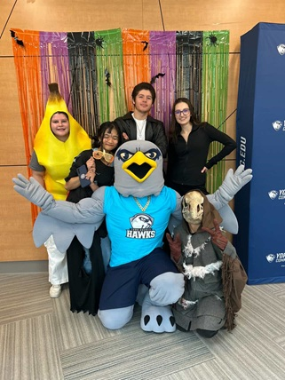
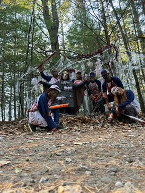
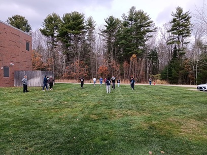

The SGA Legacy Project
The SGA is working toward building and advocating for YCCC to have a student center. This would include a place for students to get together to play games, hang out and take a break in between classes. The whole build would be between 18 to 50 million and while the SGA will be unable to fundraise that amount of money by ourselves, we hope to bring awareness and gain support for building a student center. We are currently looking into fundraising and petitioning for the student center.
Support Us
Do you have any ideas for us? Would you like to sign our petition to build the student center? Contact up with the subject "Legacy Project Ideas" and we will add it to our list of ideas or you can click the signature button below to also show your support!
Show your support!
0
Other Projects
The SGA has also held different events in the Pratt and Whittney lounge as well as volunteering for the Wells Haunted Hayride event and hosting a game of flag football.


